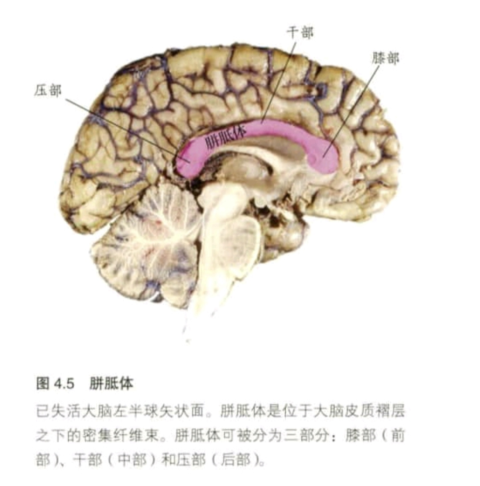

heterotopic connections /异位连接
一侧大脑区域经胼胝体与另一侧不同区域之间的连接。比较等位连接（homotopic connections）。
corpus callosum / 胼胝体
由连接两个大脑半球皮质的轴突组成的纤维束，是大脑中最大的白质结构。
分为:膝部(前部)
干部(中部)
压部(后部)

posterior commissure /后连合
位于胼胝体后部的连接左右大脑半球的神经束，包含有促进瞳孔光反射的纤维束。比较前连合（anterior commissure）。
heterotopic areas /异位区域
大脑中非对应的但又彼此连接的区域。例如，左半球M1区与右半球V2区之间的连接组成异位区域。比较等位区域（homotopic areas）。
hierarchical structure /层级结构
从整体特征到局部特征能被描述成多个水平的结构，其中更精细成分包含在更高水平的成分之中。
homotopic areas /等位区域
大脑左右两个半球中相对应的区域。例如，右半球M1区与左半球M1区连接将会组成等位区域。比较异位区域（heterotopic areas）。
interpreter /解释器
大脑左半球中通过对内部和外部事件做出解释来产生合适反应行为的神经系统。
splenium (复数: splenia) /压部
胼胝体后部，连接左右侧枕叶。
functional asymmetries /功能不对称性
指大脑两半球之间存在功能差异。
module /模块
那些特异化的、独立的且通常是局部地参与某种功能的神经元网络。
planum temporale /颞平面
颞叶的表面，包括威尔尼克区。学术界长期认为由于语言功能偏侧化，因此左半球颞平面大于右半球颞平面，但这一理论目前尚存争论。
Wada test /瓦达试验
通过注射异戊巴比妥来暂时干扰一侧大脑半球功能的临床技术。该测试可用于确定癫痫的发作源，为发现大脑半球功能偏侧化提供了重要启示。
cerebral specialization / 大脑特异化
特定脑区适应于特定的认知或行为活动。
handedness /利手
用左手或右手完成大部分手部动作的倾向。
homotopic connections /等位连接
一侧大脑皮质的某一区域经胼胝体与另一侧大脑半球相对应区域之间的连接。比较异位连接（heterotopic connections）。
anterior commissure / 前连合
胼胝体前部连接左右大脑半球的神经束。比较后连合 (posterior commissure)。
dichotic listening task / 双耳分听任务
一种听觉任务，实验者分别向两耳呈现两种相互竞争的信息，并要求被试报告一种或两种信息。一只耳朵的同侧投射会被来自另一只耳朵的对侧投射抑制。
commissures / 连合
中枢神经系统中连接左右半球的白质纤维束。胼胝体是大脑中最大的连合纤维。也可参见前连合 (anterior commissure) 与后连合 (posterior commissure )。